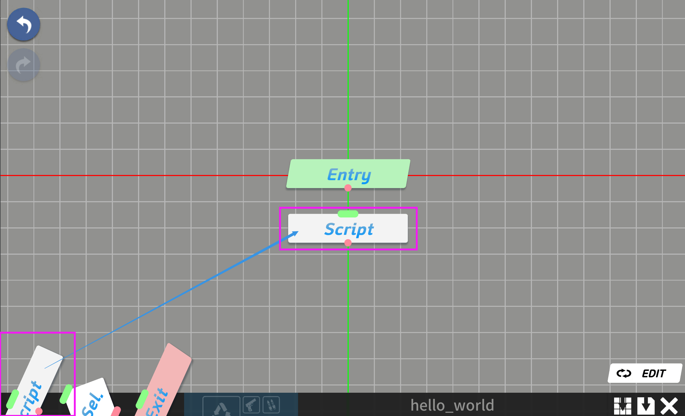
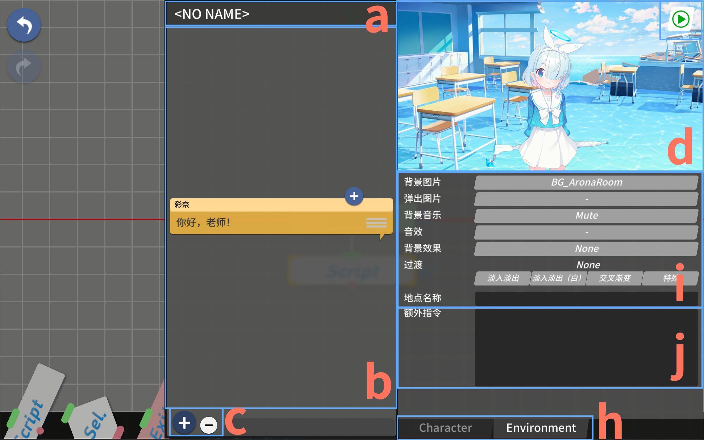
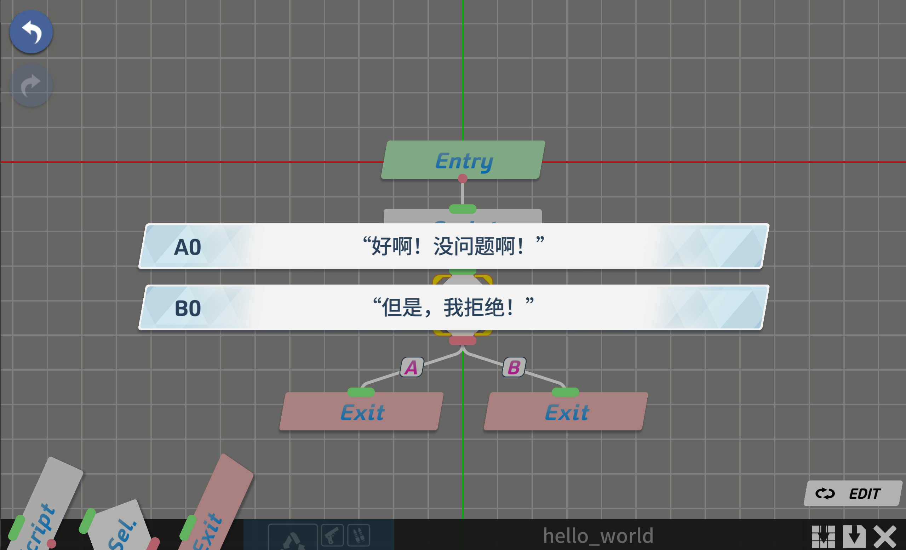

AzureArchive 从零入门：10 分钟搭出第一个可玩的剧情分支
这篇实战教程带你一步步跑通 AzureArchive 的核心工作流——从新建项目到拖节点、写对话、加选项分支，把一段可玩的剧情做出来。
这篇教程结束时，你能用 AzureArchive 搭出一段带选项分支的可玩剧情。不需要任何前置知识，跟着做就行。
准备：先把东西装对
AzureArchive官网 是蔚蓝档案玩家圈里流传已久的剧情编辑器——用节点图的方式可视化地拼装对话、角色动作和选项分支，写完直接导出鉴赏模式看效果。Windows 平台首选，Mac 和 Linux 也有对应版本。
官方下载的压缩包里自带资源包，安装的关键一步就是把它放对位置。很多人第一次打开就卡在「找不到角色和背景」，基本都是资源包没配置好。安装完成后，打开编辑器第一件事就是检查资源包路径，确认里面有角色立绘、背景图和 BGM 素材。
第一步：新建项目，从一个 Entry 开始
双击启动 AzureArchive，你会先看到欢迎界面。点「新建项目」，给它起个名字（随便起，反正只是测试），然后工作区里会自动出现一个方块——那就是 Entry 节点，剧情的起点。

Entry 节点有且只能有一个，它删不掉、不能跳过。这是设计：不管你的剧情有多复杂，最终都从这一个点出发。别纠结它为什么不让删，记住它就是起点就行。
第二步：拖一个 Script 节点下来
左边或顶部有个节点工厂面板，里面列着四种核心节点类型。现在你需要的是 Script——它是承载对话、摆角色、切背景的主力节点。
按住 Script，拖到 Entry 节点旁边的空白处放下。然后把 Entry 右边那个小圆点（出端）拖到 Script 左边的小圆点（入端），一条连线出来了。现在 Entry → Script 的剧情通路打通了。
拖节点、连线、放位置，这个操作会贯穿你整个创作过程。节点之间可以自由排列，连线可以交叉，工作区可以无限滚动放大缩小——把它当成一张画布来用就对了。
第三步：打开检查器，开始写东西
双击刚才拖出来的 Script 节点，右侧会弹出脚本节点检查器。这是你以后 80% 时间都要盯着的面板，值得花两分钟搞清楚它在说什么。

检查器从上到下分几个区域：最上面是节点名称（给它起个好认的名字，比如「白子开场」）；中间是脚本列表——一个 Script 节点可以包含多条脚本，从上到下顺序就是播放顺序；下面是对话输入框和栏位属性。每个区域的详细功能和属性选项，AzureArchive文档里有逐格详解，照着看很快就能上手。
先来最基础的操作：给第一条脚本加一个角色。点击检查器里某个栏位编号（#1 到 #5 都可以），然后在下方栏位属性里点「角色」下拉——搜索「白子」，选中她。
现在把白子的 Role 设成 Speaker，她就会自动占据 #0 发言者栏位，头像出现在对话框旁边。接着在对话输入框里敲第一句台词——随便写什么都行，比如「老师，欢迎回来！」。
第四步：刷新预览，看看效果
改完东西，养成一个习惯：点右上角的 ▶ 刷新预览按钮。AzureArchive 不会自动实时预览，每改完就得手动点一下才能看到最新效果。
点完 ▶ ，白子应该出现在画面里，对话框显示你写的台词。如果白子没出来，检查一下是不是栏位没选对、Role 没设成 Speaker。
第五步：加一个 Selection 分支，让老师做选择
剧情要有点意思，就得让老师（Sensei）说话。在蔚蓝档案里，老师的话是以选项形式呈现的——白子说完一段，弹出两个或多个按钮让你选。这就是 Selection 节点的活。
操作顺序别搞反：先从节点工厂拖一个 Selection 节点，放在刚才那个 Script 的右边。然后给 Selection 连至少两条出端连线——每条出端连一个后续节点（可以是新 Script，也可以先拖两个 End 节点凑数）。
这里有个反直觉的细节：Selection 节点刚拖出来时没有选项列表。它的选项数完全取决于你连了多少条出端连线。连两条出端 → 两个选项；连三条 → 三个选项。连好之后再点击 Selection 节点，选项编辑面板才会出来。

选项文字别写「选项 A」「选项 B」这种敷衍的东西——鉴赏时按钮上直接显示这段文字，写得自然点，比如「当然要去！」和「再等一下吧」。
第六步：用额外指令控制节奏
写完对话和选项，你可能会觉得节奏有点生硬——角色刚出现就马上开口？对话结束后画面立刻切走？别急，额外指令就是干这个的。
打开检查器的 Environment（环境）选项卡，拉到底部，你会看到一个文本框。这里可以写 #指令名;参数 格式的指令，每条占一行。
最常用的两个指令：
#wait;3000— 暂停 3 秒再推进到下一条脚本。适合对话结束后让画面多停一会儿，或者角色出场动画播完后等一下再说话。#bgshake— 让背景画面摇晃一次，配合剧情里的震动、爆炸场景特别有感觉。
一个实用组合：角色出场脚本里只设 Position=出现，下一条脚本空对话加 #wait;1500，第三条脚本再让角色开口说话。这样出场 → 停顿 → 开口的节奏就自然了，不会像开机关枪一样。#wait 和 #bgshake 只是冰山一角，完整的额外指令表还有十几个，后面可以慢慢探索。
三个新手最容易翻车的卡点
卡点一：Entry 节点删不掉，有连线的节点也删不掉。 这不是 bug，是设计。Entry 是剧情起点，只能有一个；有连线的节点得先切断连线再拖进垃圾桶。检查一下是不是有遗漏的连线没断干净。
卡点二：#wait 写了但完全没生效。 这是个高频坑。#wait 只在脚本没有对话时生效——防止对话还没播完就硬等。如果你在有对话的那条脚本里加了 #wait，它会被直接忽略。解法是把对话和 wait 拆成两条脚本。
卡点三：Selection 节点拖出来后看不到选项编辑面板。 几乎可以确定是你还没连出端连线。Selection 的选项数由出端数量决定，先连两条出端再说。
进阶一句话
跑通这五步之后，你已经能做出一个带选项分支的可玩剧情了。往下可以玩的东西还很多——环境设置里换背景图和 BGM、额外指令还有 #fx（特效）和 #zmc（屏幕震动）、Selection 节点里嵌套多轮选项做更复杂的分支……总之节点图铺得越大，剧情张力就越强。
整理 AzureArchive 相关资料的时候顺便看了一下国内几个常用的代码托管仓库，三个地方都能拿到同一套文档和资源——GitHub 上维护着原始版本，Gitee 和 GitCode 镜像同步方便国内用户直接克隆下载。